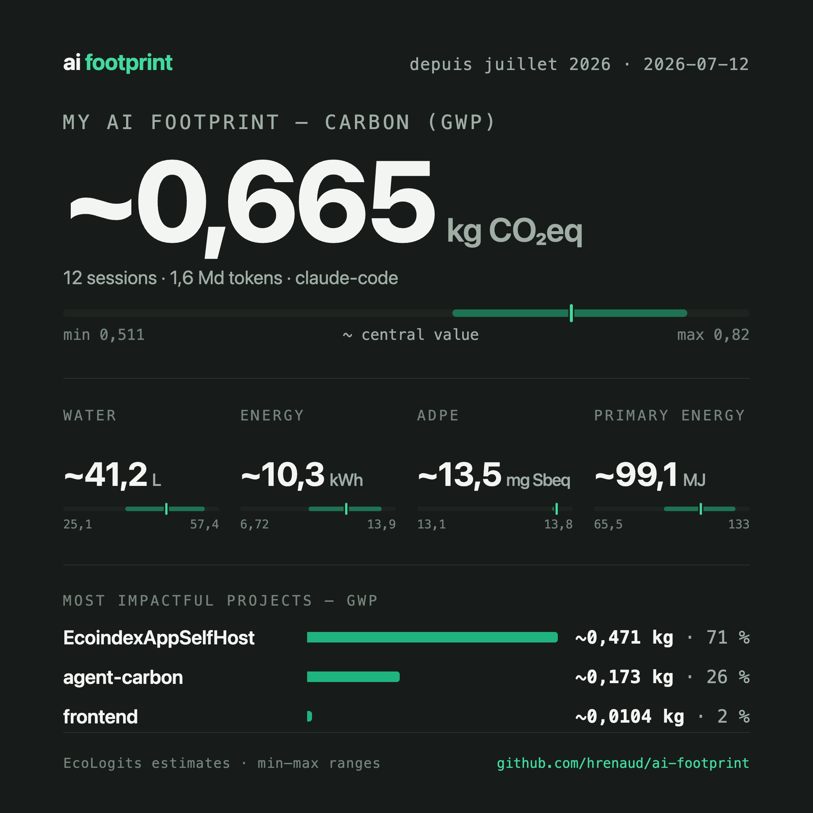
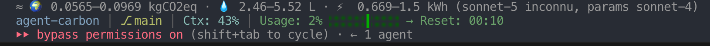

Works with your tools
-
 Claude Code
Claude Code
-
 OpenCode
OpenCode
-
 Pi
Pi
AI Footprint measures 5 environmental criteria of your AI coding sessions — greenhouse gases, water, energy, rare-metal depletion — and reports them as honest ranges, never a fake precise number.
Calculated with EcoLogits — recognized open-source engine, offline, no invented numbers
An unknown model? One command maps it to its Hugging Face equivalent to estimate its impact.
curl -fsSL https://raw.githubusercontent.com/hrenaud/ai-footprint/main/install.sh | bash
Install with a single command — no configuration. Homebrew and PyPI are also available, see the docs.
Use Claude Code, OpenCode or Pi exactly as you already do.
Run a detailed report (by project and model) with the
/footprint-report command, or a shareable image with
/footprint-card.
See your impact in the statusline, live, session after session.

Greenhouse gases emitted, in CO2 equivalent.
Water consumed to cool the datacenters running the model.
Depletion of rare mineral resources used to build the hardware.
Electricity consumed by the servers to answer your request.
Primary energy required, upstream of electricity generation.
The exact region of the datacenter answering your request is unknown, and its energy efficiency (PUE) varies widely. Any tool claiming a single precise figure is hiding that uncertainty — or making it up.
AI Footprint doesn't reinvent the modeling: it delegates every calculation to EcoLogits, a recognized open-source engine already used by other projects in the community — verifiable, not a proprietary black box.